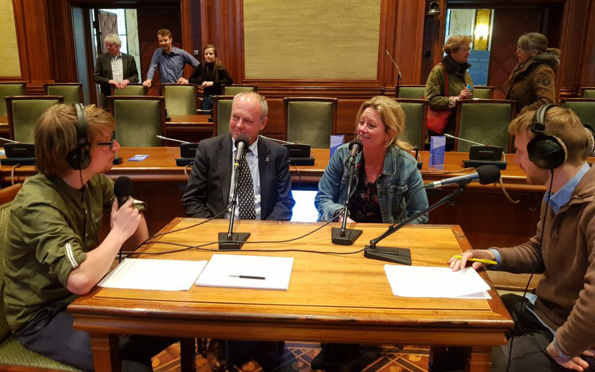

Politiek071
Radioprogramma | 2017 - 2021
Project
Op maandagavond in gesprek met verschillende gasten uit het actuele politieke debat. Naast live gasten is er veel ruimte voor reportages van de politiek verslaggevers uit Leiden, Leiderdorp, Voorschoten, Oegstgeest en Zoeterwoude. In Politiek071 is er ruimte voor grotere maatschappelijke ontwikkelingen, politieke achtergrond en het laatste politieke nieuws.
Sleutelstad
We zijn in november 2017 van start gegaan met dit programma op Sleutelstad, waarbij Lieuwe van Slooten en ik de presentatie en redactie voor onze rekening namen. In vier jaar tijd is het programma een vast onderdeel geworden van de lokale politiek(e) (journalistiek). In september 2021 hebben twee nieuwe presentatoren het stokje overgenomen.
